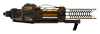
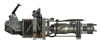
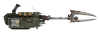
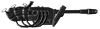
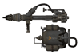

На главную Оружие Об игре Купить в Steam
На главную Оружие Об игре Купить в Steam
| Место в топе | Фото | Название | Урон | Урон в секунду | Боеприпасы | Обойма | Стоймость | Требования к навыкам |
| 1 |  | Прототип "Тесла-Битон" | 135 | 213 | Эл.заряд | 45 | 12525 | Энергетическое оружие:100, Сила:8 |
| 2 |  | Гатлинг-лазер | 7 | 211 | Эл.заряд | 240 | 6800 | Энергетическое оружие:100, Сила:8 |
| 3 |  | Плазмолив | 65 | 195 | МЯ.батарея | 10 | 7000 | Энергетическое оружие:100, Сила:8 |
| 4 |  | Тяжелый инсенератор | 35 | 140 | Топливо для огнемета | 24 | 7200 | Энергетическое оружие:100, Сила:8 |
| 4 |  | Огнемет | 16 | 128 | Топливо для огнемета | 60 | 2350 | Энергетическое оружие:50, Сила:7 |
| Оружие | Местонахождение |
| Прототип "Тесла-Битон" | Находится на месте крушения винтокрыла, в ночное время это место охраняется значительным количеством усовершенствованых мистеров храбрецов и роботов-охранников. |
| Гатлинг-лазер | Тайная квартира Братства Стали. Хидден-Вэли — можно купить у Рыцаря Торрес после того, как Курьер стал членом Братства Стали. Паладины, патрулирующие ночью территорию бункера, вооружены гатлинг-лазерами. Иногда можно купить в Серебряной лихорадке. В ходе выполнения квеста «Давние времена» можно взять с трупа Ориона Морено в случае его убийства. Может быть у паладинов Братства Стали, встречаемых во время выполнения квеста «Сплошные заботы» (от полного его отсутствия вплоть до появления у всех троих). Если уровень Курьера 40-50, то некоторые травмокостюмы Y-17 могут быть вооружены данным оружием. Если уровень Курьера 40-50, то некоторые меченые могут быть вооружены гатлинг-лазером. |
| Плазмолив | Купить у Глории Ван Графф в «Серебряной лихорадке» во Фрисайде. Украсть в «Серебряной лихорадке» со стола. Орион Морено во время битвы за Дамбу Гувера может быть вооружён плазмоливом или гатлинг-лазером. Плазмоливом вооружены травмокостюмы Y-17 при высоком уровне Курьера. Иногда вооружены меченые. Им вооружён Полковник Ройз. |
| Тяжелый инсенератор | Можно отобрать у обитающих на горе Блэк супермутантов или Теней (появятся на вооружении лишь в том случае, если уровень персонажа 15 или выше). Можно найти у Тени-мастера в пещере Блэк-Рок. От локации «Глотка дьявола» строго на северо-запад, или от поста рейнджеров «Браво» на северо-восток (ближе к северу), находятся три супермутанта, вооружённых тяжёлым инсинератором (или миниганом), гранатомётом и суперкувалдой (также учитывается уровень персонажа). При взятой особенности «Дикая Пустошь» в том же месте будет находиться ещё и «Та самая». Есть у тяжеловооружённых бойцов НКР. После достижения Курьером 16-го уровня это оружие можно будет приобрести у Глории Ван Графф в «Серебряной лихорадке». |
| Огнемет | У Чертей в Убежище 3. В Убежище 22 на уровне общих помещений рядом с искрящим трансформатором. Им вооружён Шеф-Шеф. Гоморра — в квестовом подвале, в ящиках для оружия. Ультра-Люкс — Белые перчатки жарят браминов при помощи огнемётов. Серебряная лихорадка — купить или украсть со стола. Им вооружён Волдырь |